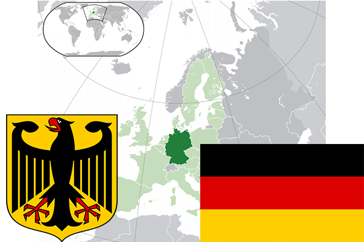

To`liq nomi: Germaniya Federativ Respublikasi
Region: Markaziy Yevropa
Qonunchilik shakli: Federativ Respublika
Asos solingan: 1-yanvar 1871-yil Germaniya Imperiyasi,
Poytaxt: Berlin
Maydoni: 375 021 km² (dunyoda 62 -o`rinda )
Chegaradosh davlatlari: daniya, Polsha, Chexiya, Avstriya, Shveysariya, Fransiya, Lyuksemburg, Belgiya, Gollandiya
Aholisi: 82 175 684 (dunyoda 16 - o`rinda, 2016 -yil roʻyxat)
Aholi zichligi: 227 /km²
Aholining o`rtacha yoshi: 79,05 yil ( 82,1 ayollar, 76,0 erkaklar)
Rasmiy tili: nemis tili
Dini: Xristian
Pul birligi: yevro
Telefon prefiksi: +49
Internet domen: .de
Xalqaro tashkilotlarga a`zoligi: BMT (1973 – yildan), Katta yettilik, Yevropa Ittifoqi, Shimoliy Atlantika Shartnomasi
Dengiz va okeanlarga chiqishi: Boltiq va Shimoliy dengizlar
YIM: Butun: $ 3,815 trln Jon boshiga $ 46,896 (2015 - yil roʻyxati)
Yirik shaharlari: Berlin, Gamburg, Myunxen, Keln, Franfurt, Dusseldolf, Dortmund, Shturtgart, Essen va Bremen